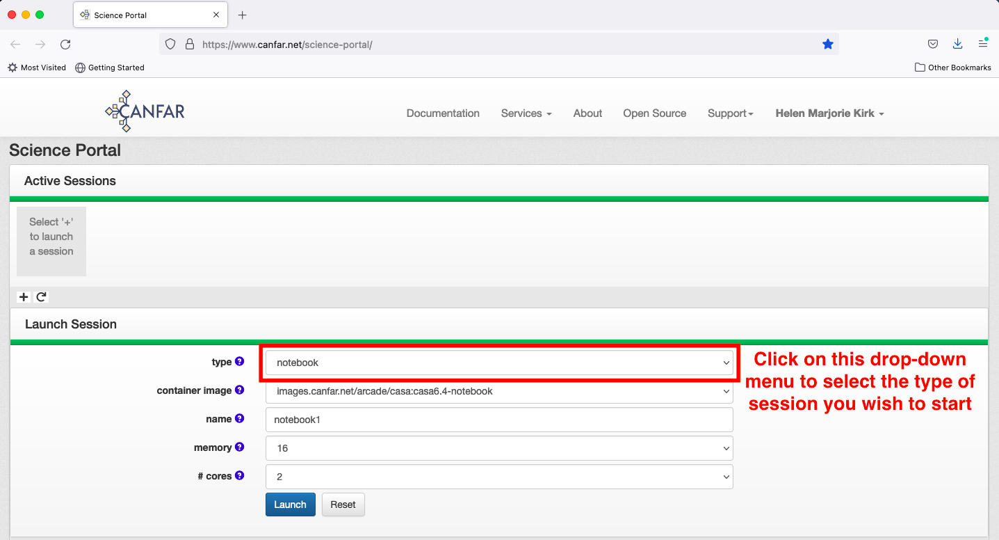

How to log in¶
You will need a CADC account to access the system. If you do not have one, you can request one here: https://www.cadc-ccda.hia-iha.nrc-cnrc.gc.ca/en/auth/request.html
To request authorization to use the Science Portal, send an email to support@canfar.net You may also wish to consider the following:
Project space: If you intend to work on a dataset with collaborators, it is recommended that you set up a project space, where a designated group of users all has common access to the files contained within it. You will need to supply a project name and estimated space requirement to the email address above.
Communications on Slack: a Slack workspace is used for some aspects of communication around the Science Portal, including notice of service outages and some trouble-shooting support. You can request that you be added to this space also by contacting the email address listed above.
Once your access has been confirmed, go to the CANFAR page: https://www.canfar.net and log in to access the Science Portal

Start a new session by clicking the plus sign

There are four different types of sessions that you can choose to launch: Desktop, CARTA, Notebook, and Contributed. All are described below; in brief, Desktop provides a linux desktop-like working environment, CARTA corresponds to ALMA’s CARTA visualization tool, Notebook provides a Jupyter Notebook environment, and Contributed contains community-contributed tools such as a time estimator for the CASTOR mission. Start by selecting the session type in the upper drop-down menu; the options will automatically be re-populated for the remaining menu items.

See the following pages for the subsequent steps. Note that you can have at most three active sessions of any type.